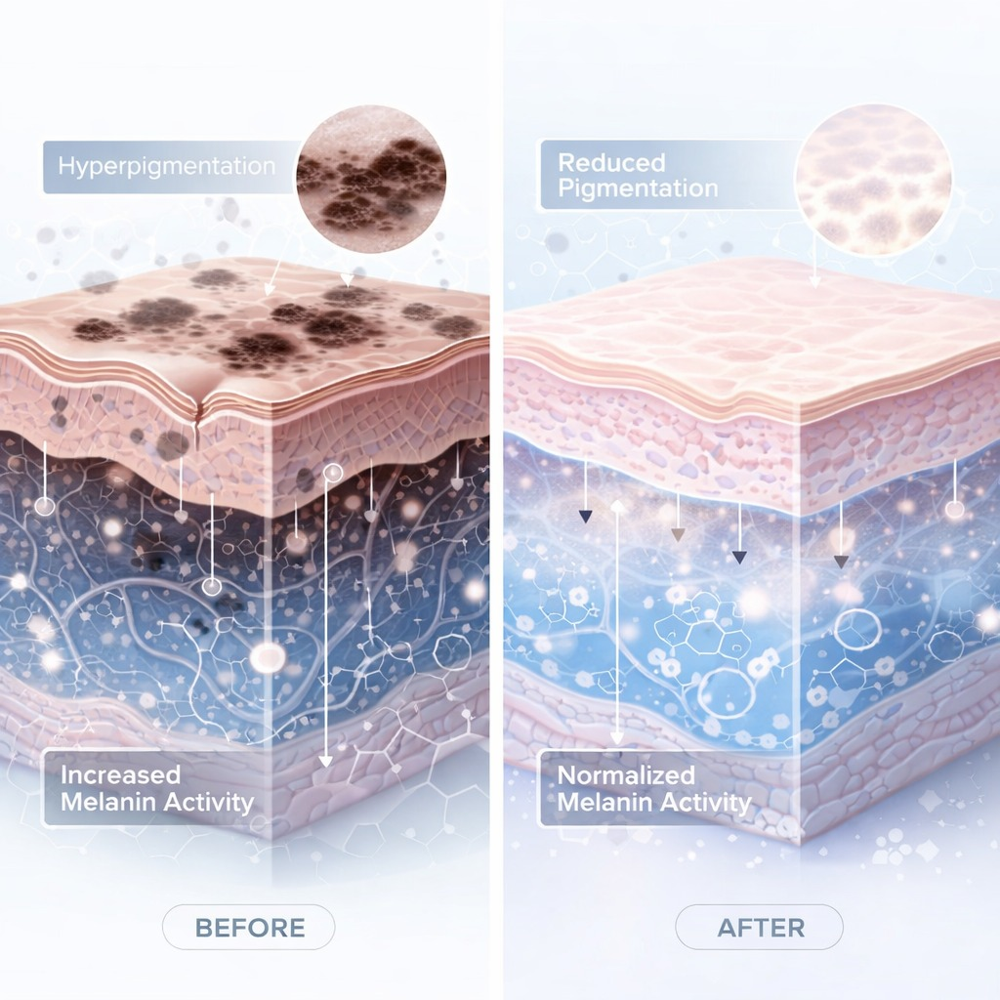
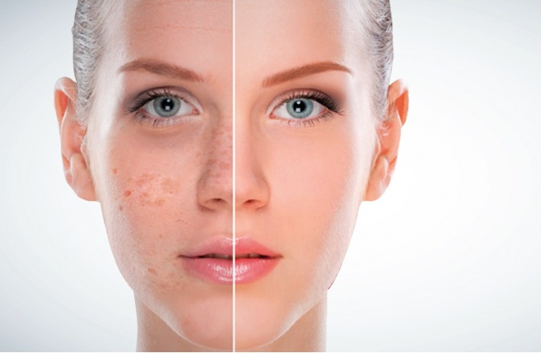

גישה רפואית מתקדמת לאיזון גוון העור

פיגמנטציה היא תוצאה של ייצור יתר של מלנין (הפיגמנט האחראי לצבע העור), הנוצר בעקבות שילוב של גורמים פנימיים וחיצוניים. התוצאה: כתמים כהים, גוון לא אחיד ופגיעה באיכות העור.
ברויאל-מד אנו מטפלים בפיגמנטציה בגישה ביורג'נרטיבית מתקדמת — לא רק הבהרה זמנית, אלא טיפול בשורש הבעיה.
פיגמנטציה אינה בעיה שטחית בלבד — אלא תהליך ביולוגי מורכב. הגורמים המרכזיים:
במקרים רבים מדובר בשילוב של כמה גורמים — ולכן טיפול שטחי בלבד לא מספיק.

רוב השיטות הקיימות מתמקדות בהבהרת הכתם בלבד. אבל בפועל: המלנין ממשיך להיווצר, הדלקת התת-עורית נשארת, והתוצאה חוזרת תוך זמן קצר.
פיגמנטציה נחשבת מצב כרוני ודורשת טיפול מתמשך ומותאם אישית.
בקליניקה אנו עובדים בפרוטוקול רב-שכבתי שמטפל בכל מנגנוני הפיגמנטציה:
משקם רקמות פגועות, מפחית דלקת תת עורית ותומך בהתחדשות עמוקה.
מאיצים תהליכי ריפוי, משפרים תקשורת בין תאים ומעלים משמעותית את אפקט הטיפול.
פילינג רפואי מתקדם הפועל בשתי שכבות — גירוי מבוקר ושיקום. מתאים במיוחד לפיגמנטציה, ללא קילוף אגרסיבי.
ניקוי עמוק של שכבת העור, שיפור חדירת חומרים והחלקת מרקם.
אלא במנגנון שגורם לו. השילוב בין טכנולוגיות מתקדמות וחומרים ביולוגיים מאפשר טיפול עמוק, מדויק ויציב לאורך זמן — ולא פתרון זמני בלבד.
להתאמת טיפול אישי על בסיס אבחון עור מקצועי — ניתן לתאם שיחת ייעוץ ללא עלות וללא התחייבות.
תיאום תור טלפוני ללא עלות